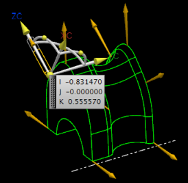
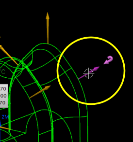

定义插补的刀轴
在避免连续刀轴变化时，部件需要一个跟随驱动曲面一般形状的刀轴。
-
展开刀轴组并从列表中选择插补矢量。
将打开插补矢量对话框。
将会在图形窗口中显示刀轴矢量的阵列，这些矢量均垂直于驱动曲面。
可以移除、添加以及编辑矢量来控制刀轴，要编辑或移除矢量，在图形窗口或者插补矢量对话框列表中选择它。
显示插补的矢量
 将刷新屏幕并更新当前定义的矢量以用于可视化参考。
将刷新屏幕并更新当前定义的矢量以用于可视化参考。
-
右击图形窗口背景并选择渲染样式→静态线框。
-
右击如下图所示矢量并注意可用的选项。

可用的选项：
-
反向
-
使用这个方位
-
移除
-
重置为默认
这是一个可以删除或移动的用户定义矢量。
-
-
点击矢量以激活动态操纵器，选择原点并将矢量拖动到新的位置。
-
右击矢量并选择显示坐标。
-
在插补矢量对话框中，滚动至矢量列表。
图形窗口中选择的矢量将会在矢量列表中高亮显示，注意矢量已经按用户分类。
-
在矢量列表中，选择矢量 3.
注意矢量 3是一个系统定义的矢量(sys)。
-
在矢量列表中，右击矢量 3并选择反向。
注意到移除选项变为不可用，您无法删除或移动系统定义的矢量，但可以重新定向。
-
点击重置为默认 。
尽管您可以翻转矢量 3的方向，但这将会得到一个不想要的结果。
-
点击确定以关闭重置确认信息框。
-
点击确定以关闭插补矢量对话框。
将打开可变轮廓铣对话框。